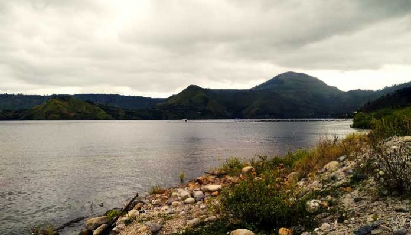
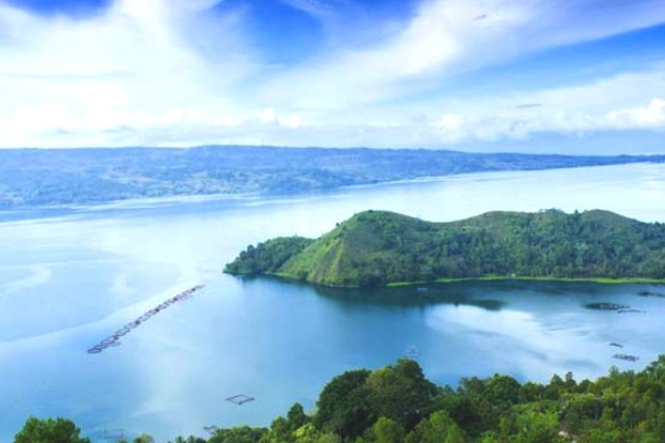

Danau Toba
 
Danau Toba adalah salah satu destinasi wisata kebanggaan Indonesia yang berada di Sumatera Utara. Toba adalah gunung api, dan legenda letusan dahsyatnya telah menjadi bagian dari sejarah Nusantara, bahkan dunia. Sejarah danau Toba tak terlepas dari letusan super dahsyat yang membentuk danau ini dan keindahan yang ada di sekitarnya saat ini.
Lokasi Danau Toba, seperti yang kita ketahui saat ini, dulunya merupakan sebuah gunung yang kemudian erupsi atau meletus dengan sangat dahsyat.
Pascaletusan dahsyat itu, Kaldera Toba tertutup batuan-batuan beku, yang kemudian air mengisi lokasi itu hingga membentuk danau. Toba adalah supervulcano, yang mana gunung api ini dapat memuntahkan minimal 300 km3 magma saat meletus.
Dikatakan Peneliti Museum Geologi Bandung Dr Indyo Pratomo, 12 April 2014 lalu, sejarah letusan Toba terjadi pada sekitar 74.000 tahun lalu, dan telah menjadi semacam simbol dunia untuk peristiwa erupsi supervulcano. Saat itu, letusan Toba telah memuntahkan tidak kurang dari 2.800 km3 material vulkanik, yang kemudian menghasilkan Danau Toba.
Sejarah erupsi super dahsyat puluhan ribu tahun lalu itu lah yang diyakini menjadi asal usul Danau Toba, yang juga diyakini sebagai danau vulkanik paling besar di dunia. Danau Toba berukuran 90 x 30 km2 dan kedalaman air danau ini mencapai 500 meter. Kedalaman danau ini telah menjadikannya sebagai sumber air tawar terbesar di dunia, dengan volume air mencapai sekitar 240 km2. Keunikan lain dari Danau Toba ini, kata Indyo, adalah keberadaan pulau di atas pulau dan danau di atas danau.
Menurut ahli, Pulau Samosir adalah dasar danau yang terangkat ke atas, ditunjukkan dengan ditemukannya banyak fosil ganggang di pulau ini. Saat letusan hebat gunung Toba, danau perlahan mulai terbentuk dan ganggang-ganggan hijau mulai tumbuh di dasar danau.
Danau Toba mengubah dunia
Letusan gunung ini telah memunculkan danau vulkanik yang sangat besar, dan bisa dibayangkan bahwa letusan ini pun memberi dampak bagi dunia kala itu. Gunung api purba tersebut pernah membuat dunia menjadi gelap, karena badai vulkanik dari letusan supervulcano Toba. Konsentrasi aerosol sulfat di atmosfer telah menghalangi sinar matahari sebagai asupan bagi kehidupan di Bumi ini. Akibat letusan dahsyat itu, populasi manusia di Bumi ini menyusut hingga 60 persen, diikuti dengan terganggunya mata rantai makanan. Bahkan, letusan gunung supervulcano ini pun diyakini telah mengubah perjalanan manusia modern, Homo sapiens. Asal usul Danau Toba dan sejarah letusan dahsyat gunung supervulcano purba ini telah menjadi bagian penting bagi sejarah Nusantara, serta bagaimana dampaknya bagi dunia.